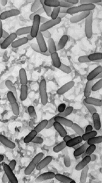

A little about bacteria |
| Bacteria and archaea are classified together as prokaryotes, a term that means before or without a nucleus. |
Both bacteria and archea are typically small, between 2 to 5 µm in length. Individual cells can be visualized only through the use of a microscope,and so are known as microbes. While they appear superficially similar under the microscope, bacteria and archea are as different from one another as they are from the eukarya, that is cells with a nucleus. Eukarya are thought to have appeared about two billion (2 x 109) years ago, apparently as the result of an endosymbiotic event that involved both an archaeal and a bacterial cell. The mitochondria of modern eukaryotes are derived from the bacterial partner in this event. |
While small, microbes are by no means simple, the typical microbial cell contains the genetic information to encode more than 3000 genes. They can metabolize an astonishing array of substances and play a central role in the ecology of the earth. For purposes of comparison, a human cell is thought to contain about 30,000 genes. |
|  |
|
Prokaryotes often grow in complex and heterogeneous communities known as biofilms. Within these communities there are both cooperative and competitive interactions that lead to complex social behaviors and ecological interactions. Prokaryotes can survive under conditions where water is liquid; they can even grow on snow and ice and in rocks. |
|
| The
foundations of molecular
biology were based on studies of bacteria and their viruses,
the bacteriophage
or bacteria eaters.
The bacteria used in these studies were chosen in large part because they were easy to grow. Among the most widely used was, and continues to be, Escherichia coli, referred to as E. coli. E. coli inhabits our digestive system. When growing in your gut, E. coli is a facultative anaerobe, that means it can grow in the presence or the absence of molecular oxygen or O2. In the lab E. coli is generally grown aerobically, that is, in the presence of oxygen. Different methods are used for dealing with obligate anaerobes, organisms that do not grow at all, and are often killed, by molecular oxygen. |
|
There are many strains of E. coli. Most are benign, but some, like O157:H7, are pathogenic. They can cause severe illness and death. We will be using the benign strain K-12 in our studies. Even though we are virtual, it is a good idea to wash your hands with soap and water before you leave the lab! |
| The E. coli genome is a circular double-stranded molecule of DNA; this DNA molecule is 4,639,221 base pairs in length and encodes ~4300 genes. |
|
|
The radial lines on the genome map indicate the positions of specific genes, the sizes of the polypeptides or RNAs they encode, and the functions of these gene products, where it is known. Clicking on the genome map will take you to the National Institutes of Health (NIH)/National Center for Biotechnology information (NCBI) site for the E. coli K12 genome. There, a click on a region of the genome map will take you to a magnified view of the DNA region, with the genes indicated (go ahead, try it!). |
|
Use Wikipedia |
revised 19 March 2005 |